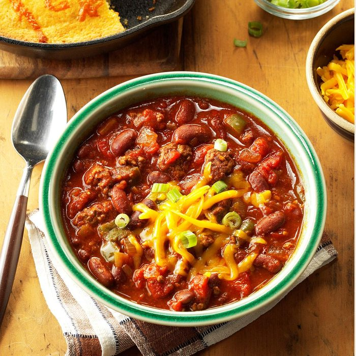

Inspired by: Wendy's Chili
This hearty slow cooker chili can cook for up to 10 hours on low in the slow cooker.
It's so good to come home to its wonderful aroma after a long day away. —Sue Call, Beech Grove, Indiana
Ingredients
- 2 pounds lean ground beef (90% lean)
- 2 cans (16 ounces each) kidney beans, rinsed and drained
- 2 cans (14-1/2 ounces each) diced tomatoes, undrained
- 1 can (8 ounces) tomato sauce
- 2 medium onions, chopped
Recipe instructions
- In a large skillet, cook beef over medium heat until no longer pink; drain.
- Transfer to a 5-qt. slow cooker. Add the next 9 ingredients. Cover and cook on low for 8-10 hours. If desired, top individual servings with cheese and green onions.
Return to top
Return to main page